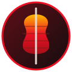

← Menüye dönSon güncelleme: 25.10.2026
Sipariş verirken isteğe bağlı olarak ad soyad, teslimat adresi ve ödeme yöntemi bilgilerini giriyorsunuz. Sipariş içeriği (ürünler ve adetler) de siparişin hazırlanması için işlenir.
Girdiğiniz bilgiler yalnızca kendi tarayıcınızda (localStorage) saklanır ve siparişi iletmek için WhatsApp mesajı olarak işletmeye gönderilir. Sitemizde sunucu tarafında bir veritabanı veya üyelik sistemi yoktur.
Bilgiler yalnızca siparişinizin hazırlanması, teslim edilmesi ve sizinle iletişim kurulması amacıyla kullanılır.
Bilgileriniz reklam veya pazarlama amacıyla üçüncü taraflarla paylaşılmaz. Sipariş iletimi için WhatsApp (Meta) altyapısı kullanılır. Site GitHub Pages üzerinde barındırılmaktadır.
Sitemizde takip veya reklam çerezi kullanılmaz. Yalnızca sepetinizi ve sipariş bilgilerinizi hatırlamak için tarayıcınızın yerel depolaması kullanılır. Tarayıcı verilerinizi temizleyerek bu bilgileri silebilirsiniz.
Kişisel verileriniz hakkında bilgi alma, öğrenme, düzeltilmesini veya silinmesini isteme ve işlenmesine itiraz etme haklarınız vardır. Talepleriniz için bizimle iletişime geçebilirsiniz.
Küncü Mix Gece Dönercisi
Ataşehir, Ergenekon Sk. 2071 6/A, 23000 Elazığ Merkez/Elazığ
Telefon: 0506 578 31 31
Bu sayfa bilgilendirme amaçlıdır; resmi hukuki danışmanlık yerine geçmez.